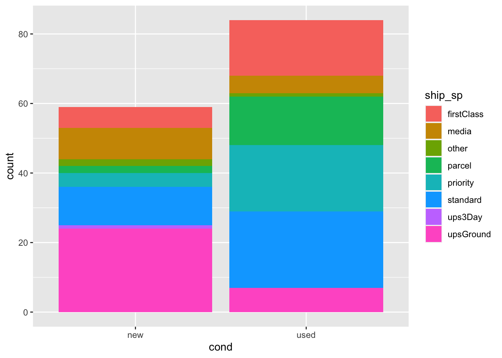
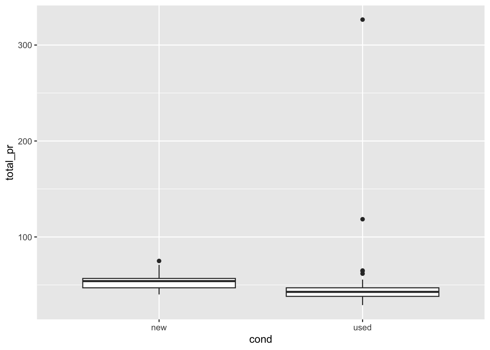
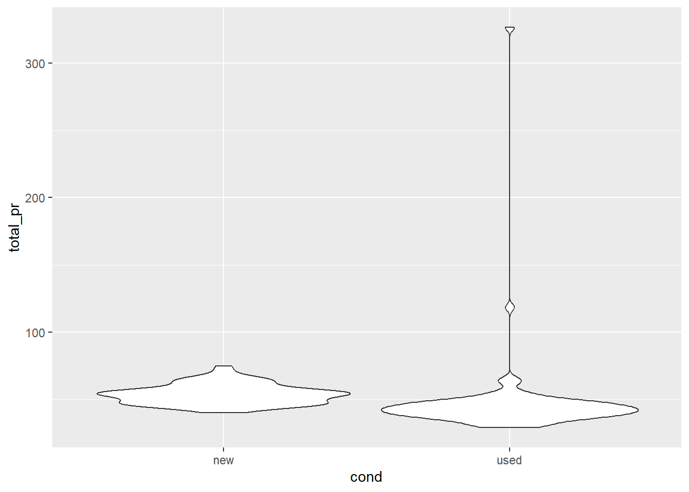

library(tidyverse)
library(scales)
library(ggridges)
library(gridExtra)Mario Games + Data Visualization
Module 3 - Lesson 3.2 - Course 1
Programming Activity Guide
Please reference the webR-intro activity for information on the different types of code chunks, questions, and how to save your work to reference later.
Getting started
Please run the following code by clicking the green arrow just above the code chunk. When reading in the data, nothing will appear after you click the button. However, clicking the arrow ensures that your data are read in and can be used for the following activity.
In this mini analysis we work with the data from the openintro package in R. These data are auction data from Ebay for the game Mario Kart for the Nintendo Wii, collected in October 2009. A key to these data can be found below:
| variable name | description |
| id | Auction ID assigned by Ebay. |
| duration | Auction length, in days |
| n_bids | Number of bids |
| cond | Game condition, either new or used |
| start_pr | Start price of the auction |
| ship_pr | Shipping price |
| total_pr | Total price, which equals the auction price plus the shipping price |
| ship_sp | Shipping speed or method |
| seller_rate | The seller’s rating on Ebay. This is the number of positive ratings minus the number of negative ratings for the seller |
| stock_photo | Whether the auction feature photo was a stock photo or not, either yes or no |
| wheels | Number of Wii wheels included in the auction. These are steering wheel attachments to make it seem as though you are actually driving in the game. |
| title | The title of the auctions |
Packages
We’ll use: tidyverse for majority of the analysis and scales for pretty plot labels later on. These are ready to use for you in this activity!
Get to know the data
Your Turn: We can use the glimpse function to get an overview (or “glimpse”) of the data. Write the following code below to accomplish this task.
With your output, confirm that:
– There are 143 rows
– There are 12 variables (columns) in the dataset
Warning
If you receive the error Error: object ‘mario’ not found, go back and read in your data above.
Demo: We can use slice to look at rows of our data. Run the following code. Change the 5 to another number to print that many rows!
What does each observation (row) in the data set represent?
Solution
Each observation represents a mario game.
Variables of Interest (update)
The variables we’ll focus on are the following:
n_bids: number of bids throughout the auctiontotal_pr: total price of game sold plus shipping in usdseller_rate: The seller’s rating on Ebaycond: Binary variable representing the condition of the video game
Visualizing categorical data with ggplot2
First, let’s explore the variable cond. Specifically, let’s investigate how many new games were sold versus how many used games were sold by creating a barplot. Add the following correct geom to make a barplot of cond.
Solution
add geom_bar() to the following code above to create a barplot of cond.
Next, let’s fill in the bars by the shipping method each game was shipped with (ship_sp).
Expected Result
mario |>
ggplot(
aes(x = cond , fill = ship_sp)) +
geom_bar()
The code above uses fill to color the segments of the boxplot by another categorical variable. Below, we change fill to color. What happens? Why?
mario |>
ggplot(
aes(x = cond , color = ship_sp)) +
geom_bar()
Solution
fill defines the color in which the geom is filled in with, while color defines the color in which the geom is outlined. A special exception to this is with scatterplots, where the dots are not treated as shapes to be filled in, and instead are filled in by color.
Count vs Proportion
Up to this point, our bar plot has counted up the number of observations for each condition of game, and has been segmented by the count of shipping method. Perhaps it is easier to compare shipping method across condition of game if we looked at the proportion of shipping method within each game. This can be achieved using position = "fill" in the geom statement. Alter the code below so that it includes position = fill, and comment on the relationship between condition and shipping method.
Solution
mario |>
ggplot(
aes(x = cond , fill = ship_sp)) +
geom_bar(position = "fill")
It appears that new mario games were mainly shipped using upsGround, while used mario games were shipped using standard shipping.
Relationships between numerical and categorical variables
Up to this point, we have been visualizing the relationship between categorical variables. What if we wanted to look at the relationships between different types of variables?
Boxplots
One way we can investigate the relationship between different types of variables is to create a boxplot. Below, we are going to create a boxplot using geom_boxplot between the variables cond and total_pr. What information can we gather from the boxplots?
Solution
mario |>
ggplot(
aes(x = cond , y = total_pr)) +
geom_boxplot()
We can infer that the median total price for new mario games is higher for the new condition versus the used condition. There appears to be one outlier in new condition, and four outliers in the used condition. The IQR of the new condition is slightly larger than the used condition.
Violin plot
A violin plot is a lot like a box plot, but also shows us information about the density of the quantitative variable. Below, we have a violin plot that again shows the relationship between the condition of the Mario game, and the total price of the game (cost + shipping). Describe the relationship below.
mario |>
ggplot(
aes(x = cond , y = total_pr)) +
geom_violin()
Solution
It appears that there is a higher density of new games at a higher price than used games. Used games appear to have two potential outliers higher than any new game.
Ridge plots
Ridge plots, similar to violin plots, shows the distribution of a numeric variable across the levels of a categorical variable. In order to make this plot, we will use geom_density_ridges. Please add this geom to the following code below to make the ridge plots. Within this geom, set alpha equal to 0.5.
Solution
mario |>
ggplot(
aes(x = total_pr , y = cond, fill = cond, color = cond)) +
geom_density_ridges(alpha = 0.5)Picking joint bandwidth of 2.68
Quiz
- Select all the apply. What information can you gather from a boxplot
- median
- mean
- IQR
- standard deviation
- mode
- Below, we have stacked barplots using the
mariodata set from your exercise. This plot looks at the relationship between condition of game, and the shipping method the seller used to send the game to the customer. Use this plot to answer the following questions.

What argument is used to change the y-axis to proportion?
colorfillshapetransform
- Across both conditions of game, which shipping method had the lowest total?
firstClassmediaotherparcelprioritystandardups3DayupsGroundnot enough information
- Which shipping method had the most used mario games compared to new mario games?
firstClassmediaotherparcelprioritystandardups3DayupsGroundnot enough information
True or False: There was a larger count of used Mario games shipped using priority than used Mario games that were shipped standard.
True or False: The y-axis that shows relative proportion must always be on a scale from 0 to 1.